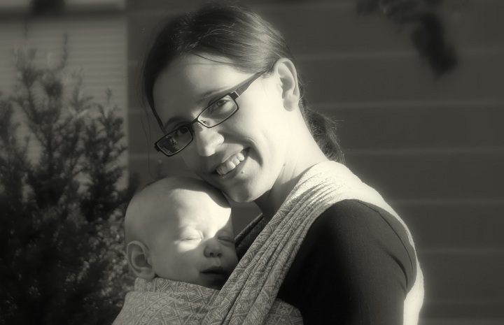
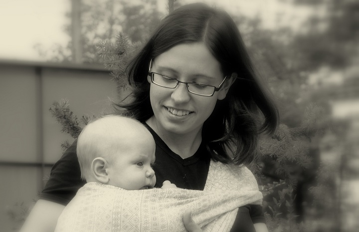
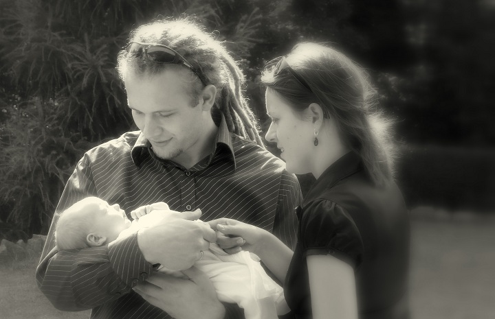
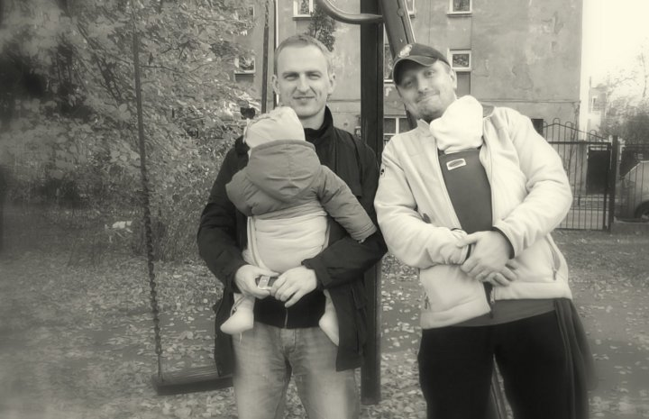

-

Słyszeć bicie serca i twój głosczuć twoje ciepło i ruch...Cóż za błogość!
-

Dotykam ciebie, a ty mnie.Jesteśmy razem.Wyczuwamy się. Rozumiemy.
-

Jesteś pewna i spokojna.Czujesz się potrzebny i dumny.Jestem bezpieczny i ufam wam.Tworzymy rodzinę.
-

Tobie wygodnie. I mi wygodnie.Wszędzie możemy być razem.